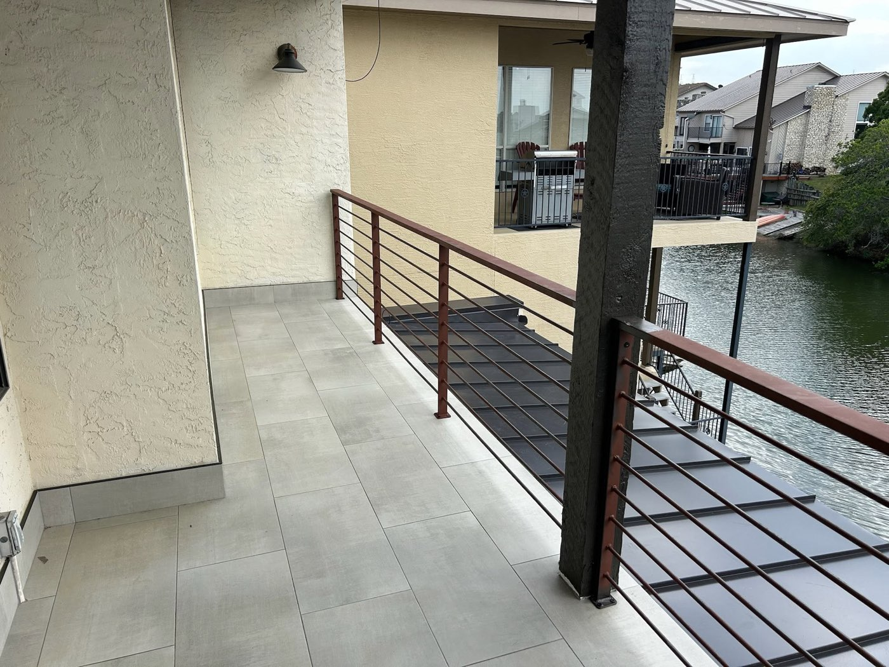
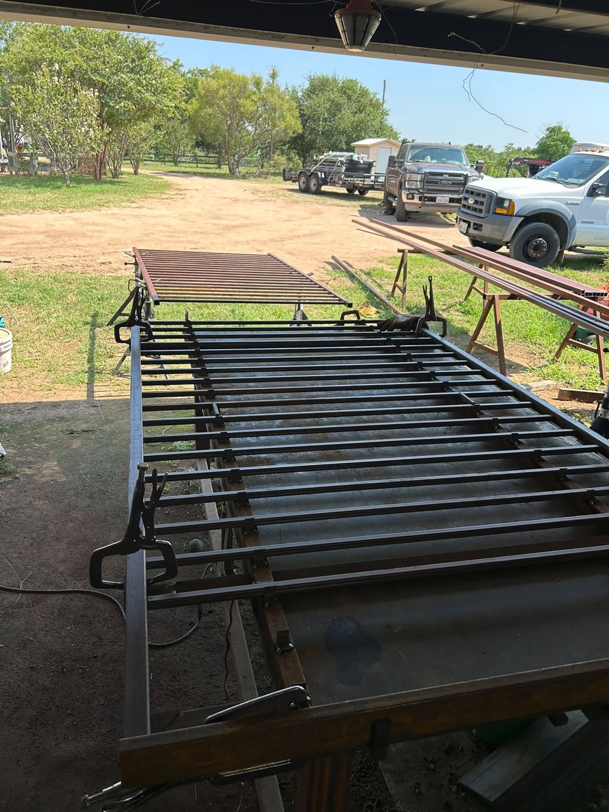
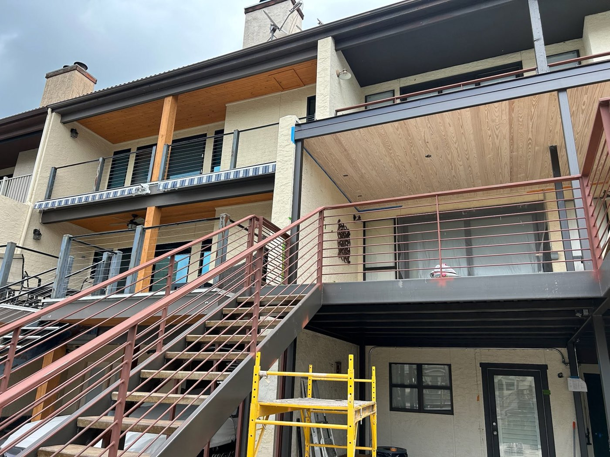
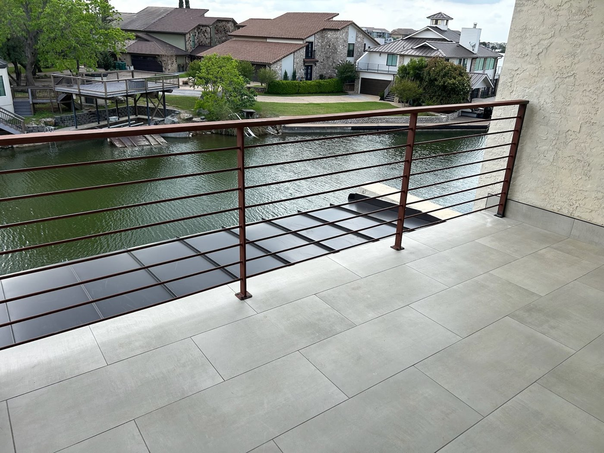
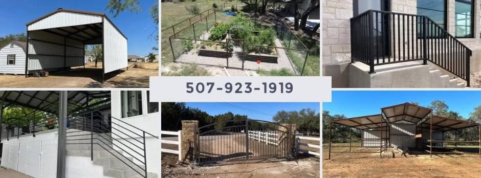

Mobile welding in Llano County and the counties around it
We come to you. Railings, gates, fence panels and carport frames, in Llano, Blanco and Burnet counties.

What we build
- Railings
- Stair and balcony railings, including the horizontal rod style with a rust-brown finish.
- Gates
- We build gates, including driveway gates hung between brick posts.
- Fence panels
- We build vertical-bar fence panels.
- Carport and lean-to frames
- Open steel frames for barns, carports and lean-tos.
- Repairs and custom jobs
- “Whether it’s a critical ranch repair or a custom project, we treat every job like it’s for our own neighbors.”
Our work




Where we work
- Llano County
- Blanco County
- Burnet County
Serving Llano County and surrounding areas. Call and tell us where the job is.
“Josiah came out and did a wonderful repair on two BBQ smokers for me. Very reasonably priced 5 star Review”
114 followers on Facebook, November 2026.
Call us about your project
We are a family-owned business. Give us a call, or send a message to talk over your next project.